Village de Kadjokro · Intronisation 2025
Dans l'unité, la discipline et la prospérité — une terre d'or et de tradition, les pieds dans la coutume et la tête dans le modernisme.
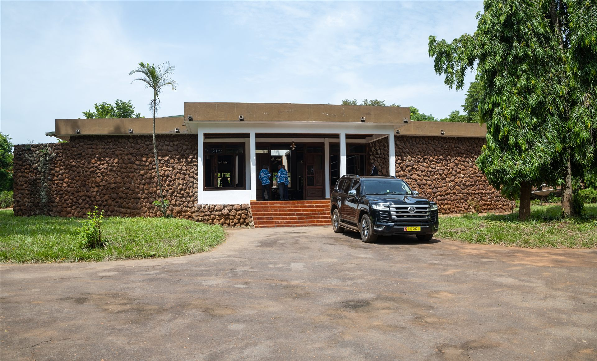
Niché sur l'axe Toumodi–Yamoussoukro, Kadjokro est un village baoulé authentique — terre d'or, de traditions et d'hospitalité — où la coutume et l'esprit de modernité se rencontrent pour bâtir un avenir commun.
Axe Toumodi-Yamoussoukro · 12 km de Toumodi · 17 km de Yamoussoukro. Sous-préfecture de Toumodi, région du Bélier.
Environ 522 habitants (recensement 2014), majoritairement Baoulé, dans un esprit d'ouverture et de diversité.
Kadjokro fait partie du canton N'Zipkri, rassemblant 9 villages frères unis par l'histoire et la coutume.
Kadjokro a vu naître feu Pierre DEBRUCHARD, ancien Préfet hors grade et collaborateur du Président Félix Houphouët Boigny.
À Kadjokro, l'or n'est pas qu'un métal : c'est le langage du pouvoir et de la mémoire. Couronnes, sceptres, colliers et tabouret sacré en or massif incarnent la dignité de la chefferie et la prospérité promise à la communauté.
Le tô royal orné de symboles baoulé en or : signe de l'autorité du chef.
La canne à l'éléphant d'or, emblème de force, de sagesse et de longévité.
Siège des ancêtres, cœur spirituel de la chefferie transmis de règne en règne.
Colliers et bracelets d'or massif portés lors des grandes cérémonies.
Quatre familles fondatrices — piliers de l'identité, de la gouvernance et de la cohésion du village depuis des générations.
Famille détentrice de la chefferie actuelle. Nanan Assamoi Konan 2 en est l'illustre représentant.
Grande famille traditionnelle contribuant activement à la gouvernance du village.
Pilier de la tradition baoulé, gardienne des coutumes et des rites ancestraux.
Quatrième pilier de la communauté, garant de l'équilibre et de l'harmonie sociale.
« Un village sans chef est comme une case sans pilier. »
— Sagesse Baoulé · KadjokroAprès six longues années d'attente, le village a vécu un moment solennel : l'intronisation de son septième chef, Nanan Assamoi Konan 2 — couronné selon la coutume, tabouret sacré et sceptre d'or à l'appui, devant toute la notabilité.
Faites défiler — la cérémonie se dévoile acte après acte ↓
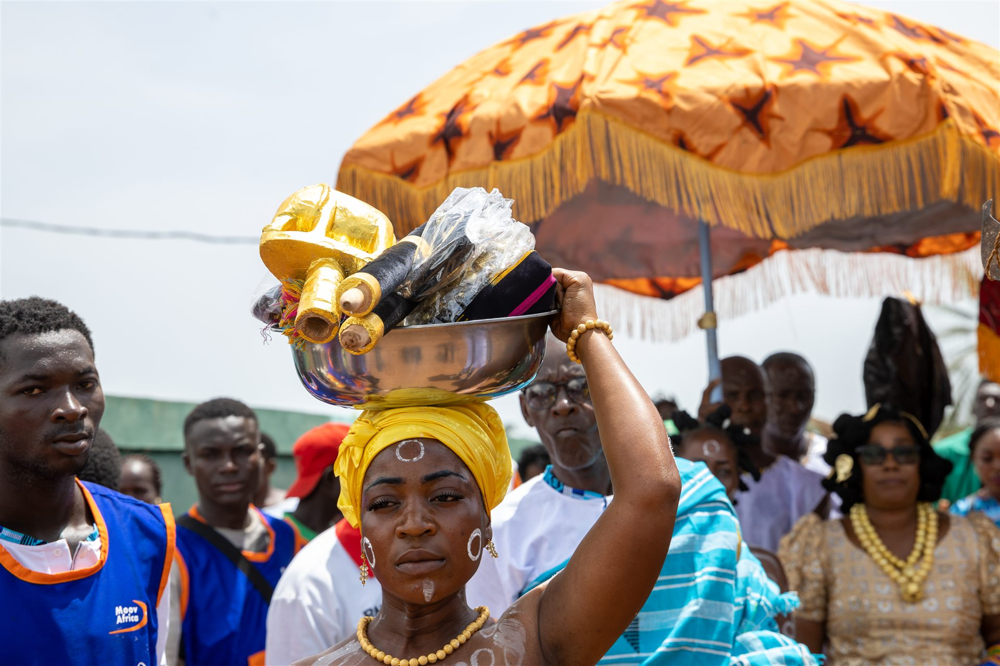
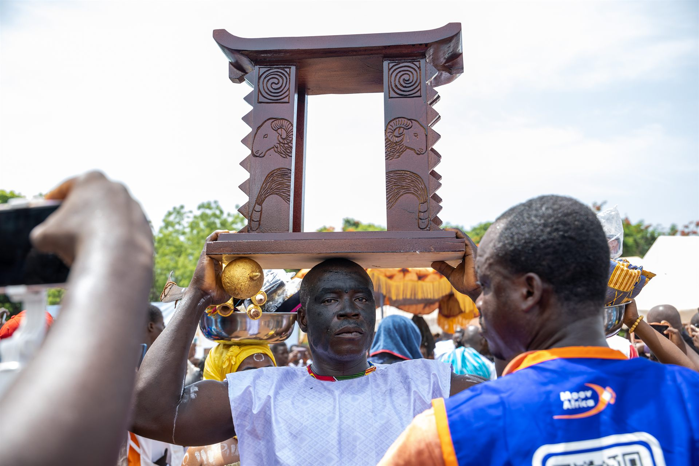
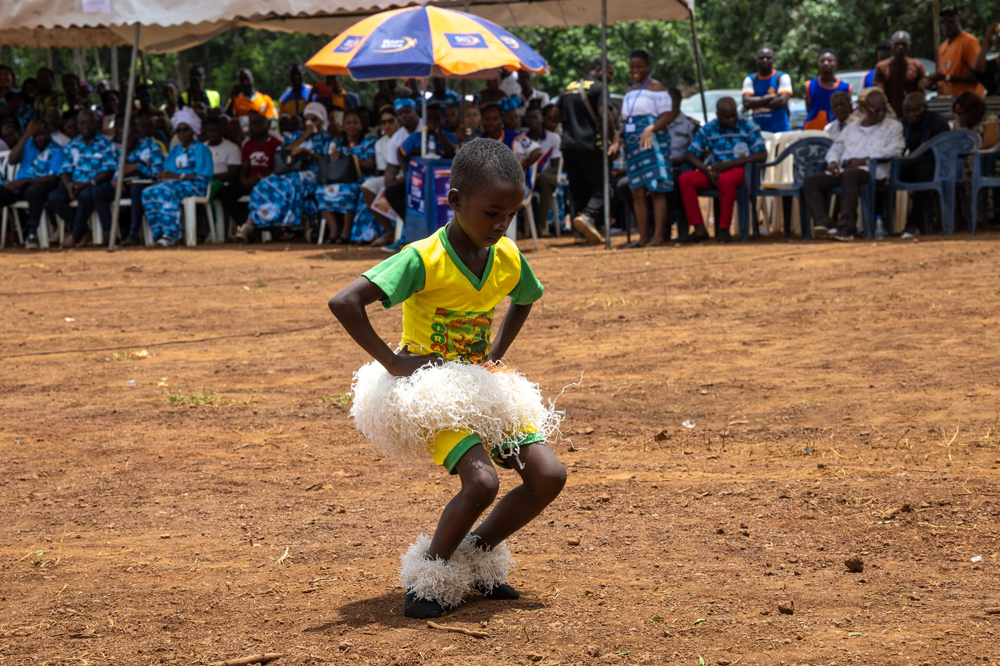
Cliquez sur une photo pour l'agrandir · naviguez avec les flèches.
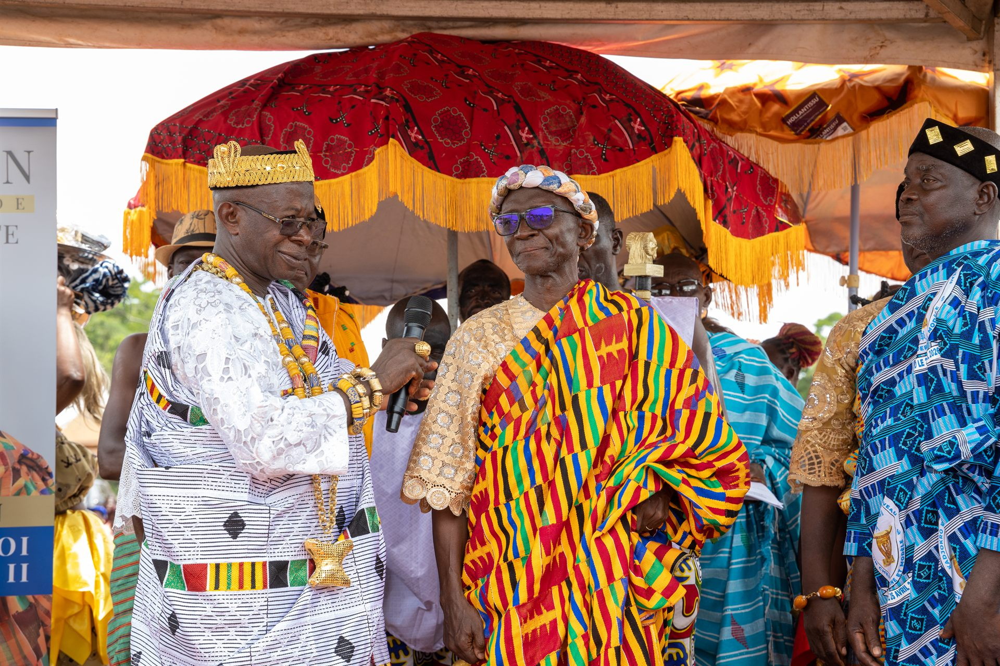
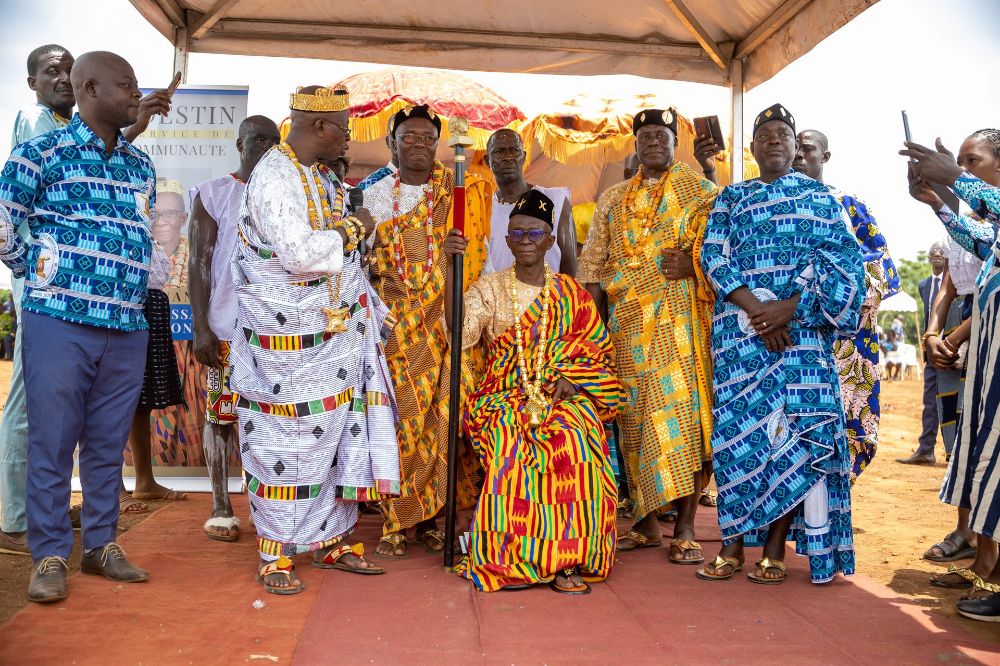
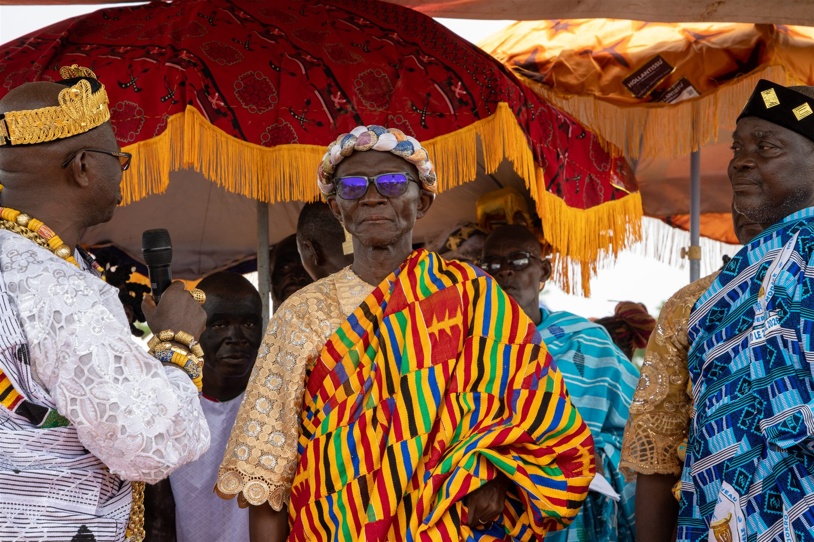
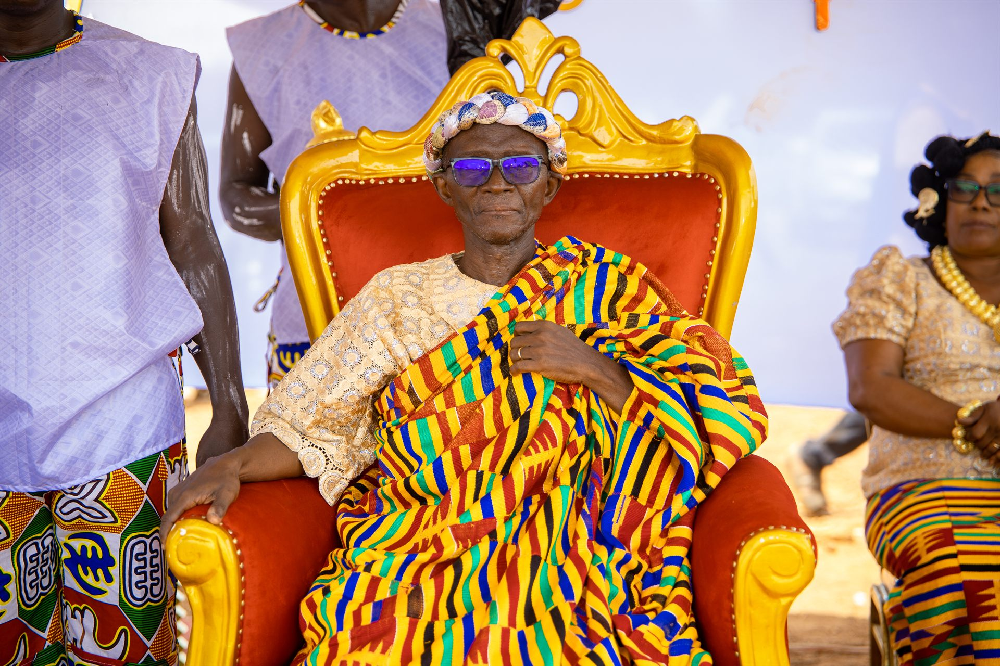
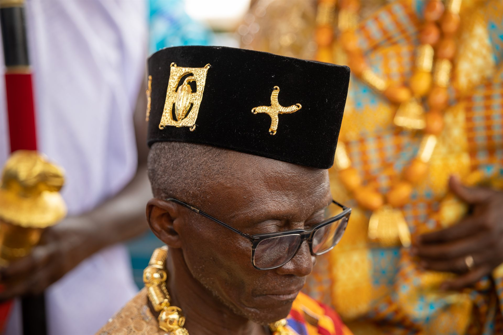
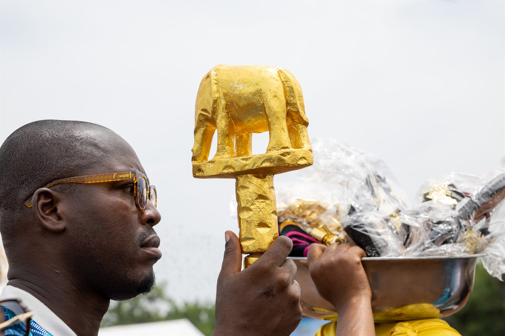
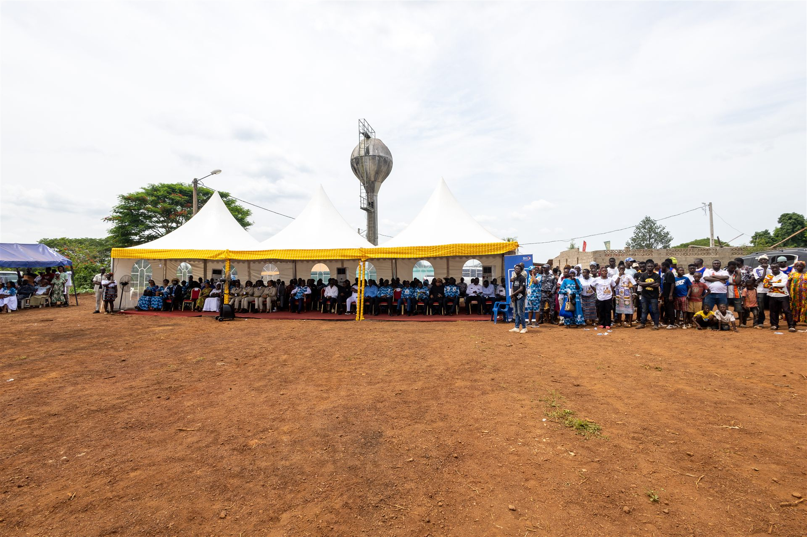
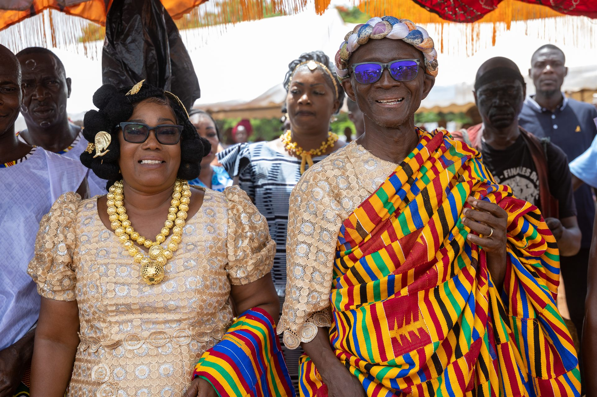
Nanan Assamoi Konan 2, N'Dri N'Guessan Eugène à l'état civil, est issu de la grande famille N'Godo Ossou. Son père, feu N'Goran N'Dri dit Bozia, Ancien Combattant de la Légion française, lui a inculqué les valeurs de respect, de dignité et de cohésion sociale.
Après un brillant parcours (BAC scientifique au Lycée Moderne de Dimbokro) et une Maîtrise en Sciences Économiques spécialisée en GRH et Économie Pétrolière, il bâtit une carrière exemplaire au sein des groupes BP, ELF/TOTAL et PETROCI, où il finit Chef de Service Gaz Naturel.
Profondément attaché à sa communauté, il fonde la Compagnie culturelle « Tam Tam », crée en 2008 le Comité Local Croix-Rouge de Toumodi et sert comme Conseiller Municipal. Officiellement intronisé le 26 décembre 2025.
« Les pieds dans la tradition et la tête dans le modernisme. »
— Vision de Nanan Assamoi Konan 2▶ Lancez l'hymne — les paroles s'illuminent au fil du chant.
Chers parents, chers invités !
Bienvenue à Kadjokro, village du renouveau et de l'espoir.
Akwaba, Moh ni balè à Kadjokro ! bis
Nous avons attendu dans la patience, dans les épreuves et dans la persévérance !
Les ancêtres ont parlé ! Le Président Hua l'a compris : il a été l'initiateur, le facilitateur !
Merci Président Hua Koffi Joachim, merci pour ta bienveillance et ta clairvoyance !
Notre Chef est là bis : Nanan Assamoi Konan 2, un Chef Moderne et Modèle ! bis
Merci Chef, Gna gna gna kloi, Nanan Assamoi Konan 2 bis
Dirige ton peuple avec sagesse et paix !
Apporte-nous l'Unité, la Discipline et la Prospérité ! bis
Nous avons confiance en toi !
Que Dieu guide tes pas ! bis
Vive Kadjokro, esprit nouveau ! bis
Merci Président Hua Koffi Joachim, homme de valeur ! Merci Nanan Assamoi Konan 2, notre Chef, merci à tous !
Vive Kadjokro, esprit nouveau ! bis
Au-delà de l'or, la terre de Kadjokro est généreuse. Ses ressources naturelles et agricoles constituent le socle d'un développement durable pour toute la communauté.
Kadjokro vous accueille avec la chaleur légendaire du peuple Baoulé.